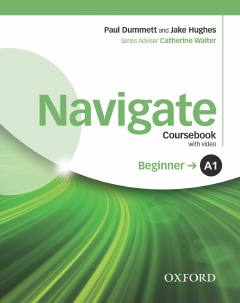

NBIngliz tilini boshlang'ich A1 darajasida o'rganish uchun mo'ljallangan zamonaviy darslik.
Ushbu qo'llanma ingliz tilini boshlang'ich A1 darajasida o'rganuvchilar uchun mo'ljallangan bo'lib, zamonaviy muloqot ko'nikmalari, grammatika va lug'at boyligini rivojlantirishga qaratilgan. Kitob o'qish, tinglash, gapirish va yozish ko'nikmalarini bosqichma-bosqich shakllantirish uchun qulay darslarni o'z ichiga oladi.